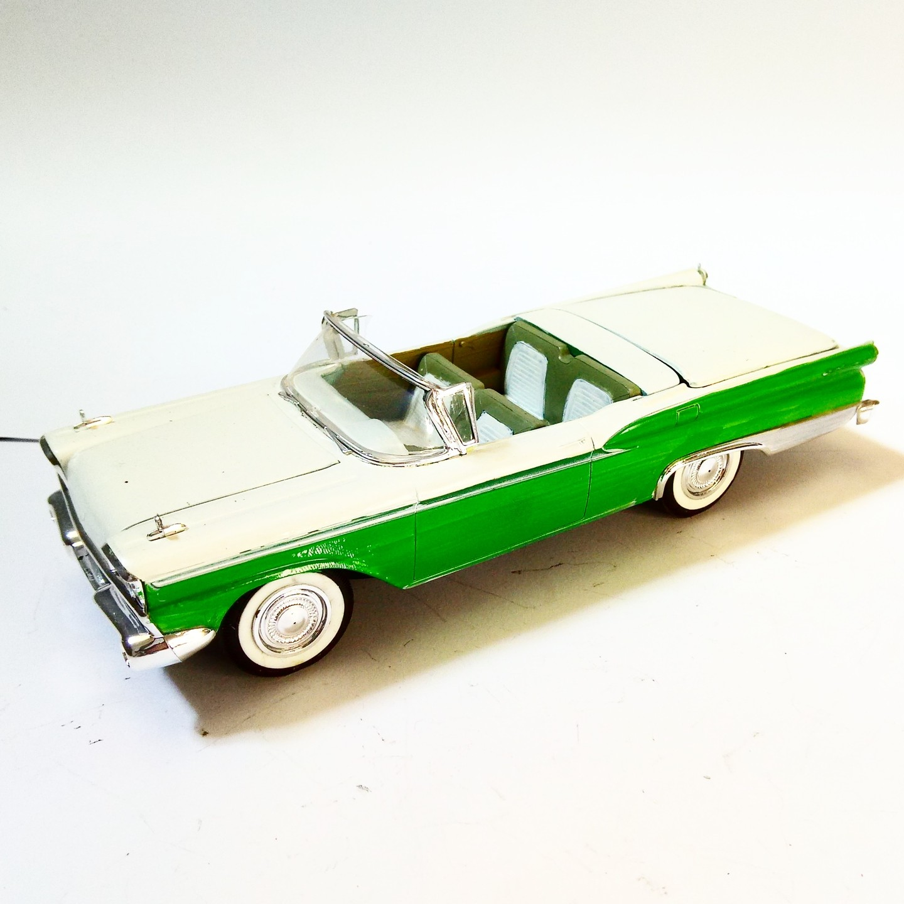

Auto e veicoli stradali · scale model archive
Ford Galaxie Skyliner
Ford Galaxie Skyliner — Kit: Revell, Scale: 1/25. Sporting a retractable hardtop in 1959! The complex leverages are reproduced in the kit #1/25 #Revell

Photo gallery
English description
Sporting a retractable hardtop in 1959!
The complex leverages are reproduced in the kit
#1/25 #Revell
Descrizione italiana
Sporting una retrattile hardtop in 1959!
Il complex leverages sono reproduced nel kit.